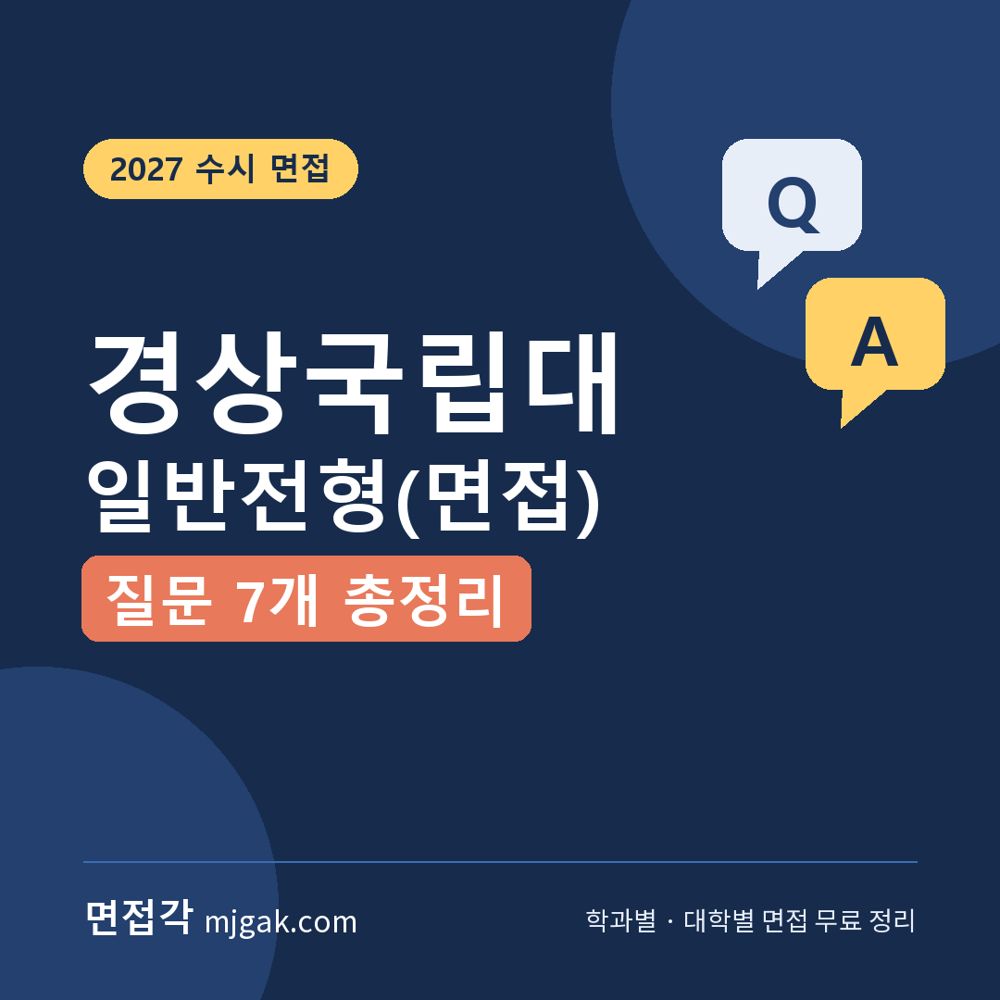
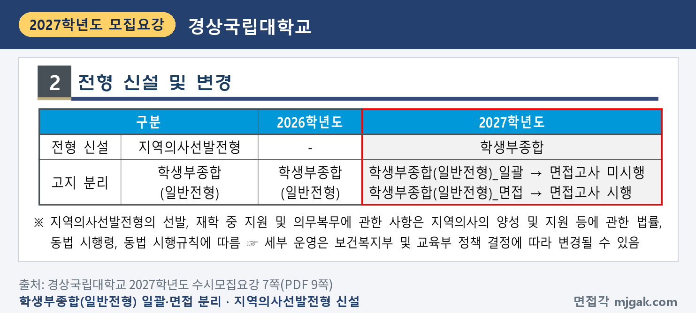
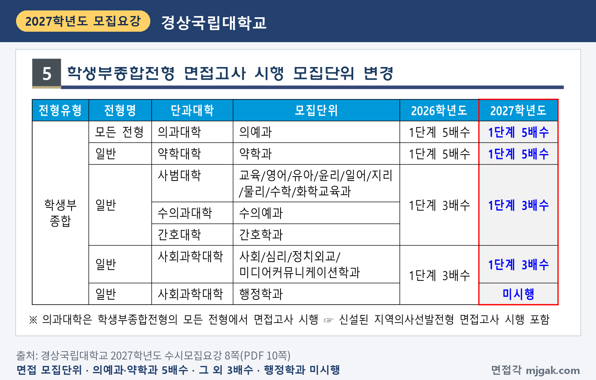
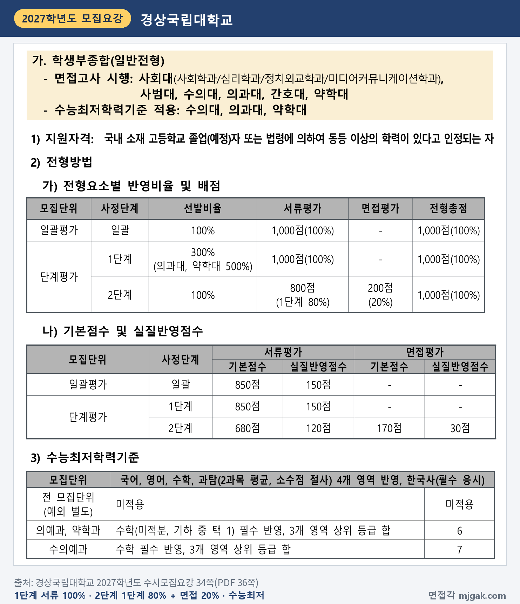
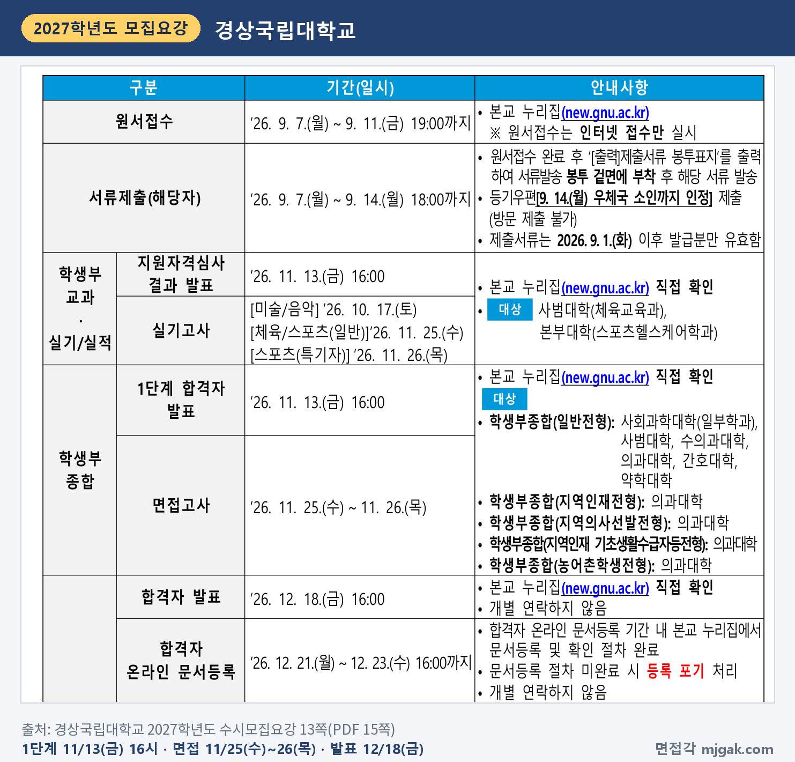
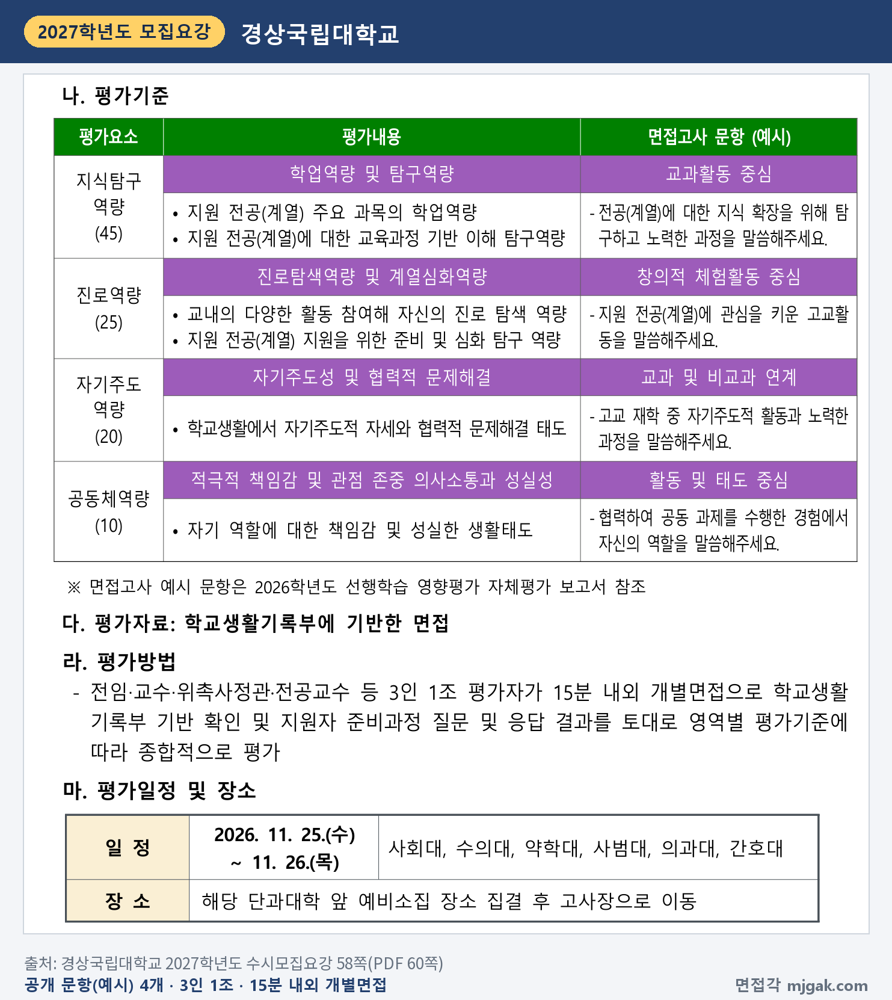
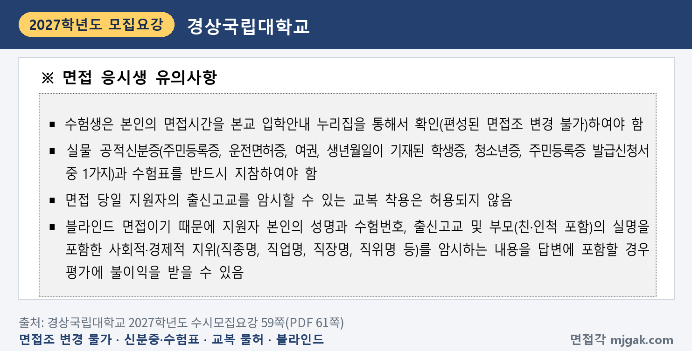
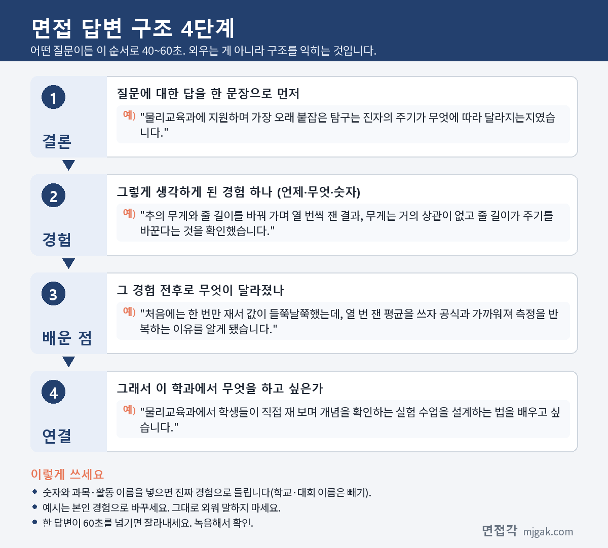

Ctrl+V (서식 유지됨)제목
본문 (이 영역 전체가 복사됩니다)
📷 여기에 이미지 넣기 — 썸네일 — thumb-gnu.png (대표 이미지로 지정)
경상국립대 학생부종합 일반전형(면접)은 모집요강에 "학생부종합(일반전형)_면접"으로 적힌 전형입니다. 먼저 챙길 것은 1단계 발표가 수능보다 먼저라는 점입니다. 1단계 합격자 발표는 11월 13일(금) 16시, 수능은 11월 19일(목), 면접은 11월 25일(수)~26일(목)입니다. 2027학년도에 학생부종합(일반전형)이 면접을 보지 않는 일괄과 면접을 보는 면접으로 나뉘었고, 면접 쪽은 100명입니다. 2단계는 1단계 성적 80%와 면접 20%를 합산하고, 면접은 3인 1조 평가자가 15분 내외로 보는 학교생활기록부 기반 개별면접입니다. 경상국립대학교 2027학년도 수시모집요강을 바탕으로 면접 모집단위와 전형 방법, 일정, 면접 방식, 공개 질문 4개와 예상 질문 3개의 답변법, 준비 순서를 정리하고, 의예과의 다른 면접 전형은 한 단락으로 묶었습니다. 이 전형에 지원한 고3과 재수생이 읽으시면 됩니다.
1. 일반전형(면접), 2027학년도에는 어떻게 보나
2026학년도 학생부종합(일반전형)은 727명이었고, 2027학년도에는 일괄 605명과 면접 100명으로 나뉘었습니다. 일괄은 면접고사를 보지 않고, 면접은 면접고사를 봅니다. 지역의사선발전형도 새로 생겼습니다(7쪽).
📷 여기에 이미지 넣기 — 캡처 1 — 경상국립대학교 2027학년도 수시모집요강 7쪽(PDF 9쪽): gnu-2027-change.png
면접을 보는 모집단위와 인원은 이렇습니다(15·19·20쪽).
- 사회과학대학: 사회학과 8명, 심리학과 7명, 정치외교학과 12명, 미디어커뮤니케이션학과 7명
- 사범대학: 교육학과 3명, 영어교육과 2명, 유아교육과 3명, 윤리교육과 3명, 일어교육과 5명, 지리교육과 3명, 물리교육과 12명, 수학교육과 5명, 화학교육과 3명
- 수의예과 5명, 의예과 4명, 간호학과 15명, 약학과 3명
사회과학대학의 행정학과는 2027학년도부터 면접을 보지 않습니다(8쪽). 지원자격은 국내 고등학교 졸업(예정)자 또는 법령에 따라 같은 수준 이상의 학력이 있다고 인정되는 사람입니다(34쪽).
📷 여기에 이미지 넣기 — 캡처 2 — 경상국립대학교 2027학년도 수시모집요강 8쪽(PDF 10쪽): gnu-2027-units.png
전형 방법은 1단계에서 서류평가 100%로 모집인원의 3배수(의과대·약학대 5배수)를 뽑고, 2단계에서 1단계 성적 80%(800점)와 면접 20%(200점)를 합산합니다(34쪽). 수의예과는 3배수입니다(8쪽). 2단계의 기본점수는 서류 680점, 면접 170점이고, 실질반영점수는 서류 120점, 면접 30점입니다(34쪽).
수능최저학력기준은 의예과·약학과가 수학(미적분, 기하 중 택 1) 필수 포함 3개 영역 상위 등급 합 6, 수의예과가 수학 필수 포함 3개 영역 합 7이고, 나머지 모집단위는 없습니다. 반영 영역은 국어, 영어, 수학, 과탐(2과목 평균, 소수점 절사)이고 한국사는 필수 응시입니다(34쪽).
📷 여기에 이미지 넣기 — 캡처 3 — 경상국립대학교 2027학년도 수시모집요강 34쪽(PDF 36쪽): gnu-2027-method.png
서류평가는 2인 1조가 학교생활기록부로 지식탐구역량 45%, 진로역량 25%, 자기주도역량 20%, 공동체역량 10%를 정성평가합니다(57쪽). 2단계 동점자는 면접고사 성적, 서류의 지식탐구역량, 진로역량 성적 순(이후 순위도 모집요강에 있음)으로 가립니다(73쪽). 면접에 결시하면 불합격이고, 학교폭력 조치사항은 정성평가로 감점합니다(8·72쪽).
2. 언제 보나: 11월 13일(금) 1단계 발표, 11월 25일(수)~26일(목) 면접
일정은 날짜순으로 이렇습니다(13·77쪽).
- 11월 13일(금) 16:00: 1단계 합격자 발표, 본교 누리집(new.gnu.ac.kr)에서 직접 확인
- 11월 19일(목): 수능
- 11월 25일(수)~26일(목): 면접
- 12월 18일(금) 16:00: 합격자 발표
- 12월 21일(월)~23일(수) 16:00: 합격자 온라인 문서등록
모집요강에는 단과대학별 면접 날짜가 나뉘어 있지 않습니다. 본인의 면접시간은 입학안내 누리집에서 확인해야 하고, 편성된 면접조는 바꿀 수 없습니다(59쪽).
📷 여기에 이미지 넣기 — 캡처 4 — 경상국립대학교 2027학년도 수시모집요강 13쪽(PDF 15쪽): gnu-2027-schedule.png
3. 면접은 어떻게 보나
전임·교수·위촉사정관·전공교수 등 3인 1조 평가자가 15분 내외 개별면접으로 봅니다. 평가자료는 학교생활기록부이고, "학교생활기록부 기반 확인 및 지원자 준비과정 질문"과 응답 결과를 토대로 평가합니다. 당일에는 해당 단과대학 앞 예비소집 장소에 모인 뒤 고사장으로 이동합니다(58쪽).
평가요소와 평가내용은 다음과 같습니다(58쪽).
- 지식탐구역량 45: 지원 전공(계열) 주요 과목의 학업역량, 교육과정 기반 이해 탐구역량(교과활동 중심)
- 진로역량 25: 교내의 다양한 활동 참여로 진로 탐색 역량, 지원 전공(계열)을 위한 준비 및 심화 탐구 역량(창의적 체험활동 중심)
- 자기주도역량 20: 학교생활에서 자기주도적 자세와 협력적 문제해결 태도(교과 및 비교과 연계)
- 공동체역량 10: 자기 역할에 대한 책임감 및 성실한 생활태도(활동 및 태도 중심)
📷 여기에 이미지 넣기 — 캡처 5 — 경상국립대학교 2027학년도 수시모집요강 58쪽(PDF 60쪽): gnu-2027-interview.png
면접을 하는 모든 전형은 블라인드 면접입니다. 성명, 수험번호, 출신고교, 부모(친인척 포함)의 실명과 직업명·직장명·직위명은 말하면 안 되고, 특정 과목이나 비교과 프로그램을 물을 때 출신고교를 유추할 수 있는 답도 피해야 합니다(2쪽). 출신고교를 암시할 수 있는 교복은 입을 수 없고, 실물 공적신분증과 수험표를 꼭 가져가야 합니다(59쪽). 고사 당일 휴대폰, 녹음기, 카메라 등 전자기기는 일절 소지할 수 없습니다(2쪽).
📷 여기에 이미지 넣기 — 캡처 6 — 경상국립대학교 2027학년도 수시모집요강 59쪽(PDF 61쪽): gnu-2027-blind.png
4. 대학이 공개한 질문 예시 4개와 예상 질문 3개, 답변법
경상국립대는 모집요강 58쪽에 평가요소별 면접고사 문항(예시)을 공개했고, 이 예시는 2026학년도 선행학습 영향평가 자체평가 보고서를 참조한 것이라고 적었습니다. 질문 1~4는 그 문장을 그대로 옮긴 것이고, 질문 5~7은 평가 기준을 바탕으로 정리한 예상 질문이며 대학이 공개한 질문이 아닙니다. 예시 답변은 모집단위를 바꿔 쓴 가상의 예시이니 본인 경험으로 바꾸세요.
▶ 질문 1. "전공(계열)에 대한 지식 확장을 위해 탐구하고 노력한 과정을 말씀해주세요." (대학 공개, 지식탐구역량 45)
왜 묻나: 반영비율이 가장 큰 지식탐구역량의 문항이고, 평가내용은 "지원 전공(계열)에 대한 교육과정 기반 이해 탐구역량"입니다.
답변 구조: 탐구 주제 한 문장 → 수업에서 출발한 계기 → 직접 한 방법과 결과 → 알게 된 것 → 학과와 연결.
답변 예시 (물리교육과):
"물리교육과에 지원하며 가장 오래 붙잡은 탐구는 진자의 주기가 무엇에 따라 달라지는지였습니다. 추의 무게와 줄 길이를 바꿔 가며 열 번씩 잰 결과, 무게는 거의 상관이 없고 줄 길이가 주기를 바꾼다는 것을 확인했습니다. 처음에는 한 번만 재서 값이 들쭉날쭉했는데, 열 번 잰 평균을 쓰자 공식과 가까워져 측정을 반복하는 이유를 알게 됐습니다. 물리교육과에서 학생들이 직접 재 보며 개념을 확인하는 실험 수업을 설계하는 법을 배우고 싶습니다."
주의: "책을 많이 읽었습니다"로 끝내지 말고, 수업에서 시작해 내가 직접 해 본 과정을 말하세요.
▶ 질문 2. "지원 전공(계열)에 관심을 키운 고교활동을 말씀해주세요." (대학 공개, 진로역량 25)
왜 묻나: 진로역량의 평가내용은 "교내의 다양한 활동 참여해 자신의 진로 탐색 역량"입니다.
답변 구조: 관심을 키운 활동 하나 → 그 활동에서 내가 한 일 → 관심이 커진 장면 → 그 뒤에 이어 간 활동 → 학과와 연결.
답변 예시 (미디어커뮤니케이션학과):
"관심을 키운 활동은 2학년 학급 신문 만들기였습니다. 저는 급식 잔반 문제를 맡아 일주일 동안 남은 양을 기록하고 친구 서른 명에게 이유를 물었습니다. 기사를 낸 뒤 반에서 잔반 줄이기 약속이 생기는 것을 보고, 같은 사실도 어떻게 전하느냐에 따라 사람들이 움직인다는 것을 알았습니다. 그 뒤 통계 자료를 쉽게 보여 주는 방법을 더 찾아보게 됐고, 미디어커뮤니케이션학과에서 정확한 정보를 전하는 방법을 배우고 싶습니다."
주의: 활동 이름만 늘어놓지 말고, 관심이 커진 장면 하나를 구체적으로 말하세요.
▶ 질문 3. "고교 재학 중 자기주도적 활동과 노력한 과정을 말씀해주세요." (대학 공개, 자기주도역량 20)
왜 묻나: 자기주도역량의 평가내용은 "학교생활에서 자기주도적 자세와 협력적 문제해결 태도"입니다.
답변 구조: 스스로 시작한 이유 → 세운 계획 → 막힌 지점과 바꾼 방법 → 결과 → 배운 점.
답변 예시 (간호학과):
"생명과학 시간에 혈압을 배운 뒤, 할머니 댁 혈압계 기록이 날마다 다른 이유가 궁금해 스스로 조사를 시작했습니다. 측정 자세와 시간에 따라 값이 달라진다는 자료를 찾고, 가족과 함께 2주 동안 같은 시간에 앉아서 재는 기록표를 만들었습니다. 처음에는 기록을 자주 빠뜨려서 알람을 맞추고 기록표를 혈압계 옆에 붙였습니다. 정확한 측정과 꾸준한 기록이 돌봄의 시작이라는 것을 배웠고, 간호학과에서 이를 제대로 배우고 싶습니다."
주의: 누가 시킨 과제를 열심히 한 이야기와 구별해, 내가 먼저 시작한 지점을 앞에 두세요.
📷 여기에 이미지 넣기 — 이미지 1 — 제미나이 생성: 늦가을 햇살이 드는 캠퍼스 라운지 창가에서 진자 실험 세트·마이크·청진기·지구본·약 절구·뇌 모형·나무 블록 옆에서 답하는 학생(실사), 창밖 느티나무와 탁자 위 장미 / "제미나이 프롬프트 1"
(AI로 만든 이미지로, 실제 캠퍼스와 다를 수 있습니다)
▶ 질문 4. "협력하여 공동 과제를 수행한 경험에서 자신의 역할을 말씀해주세요." (대학 공개, 공동체역량 10)
왜 묻나: 공동체역량의 평가내용은 "자기 역할에 대한 책임감 및 성실한 생활태도"입니다.
답변 구조: 과제와 내가 맡은 역할 → 생긴 문제 → 내가 한 일 → 결과 → 그 뒤 달라진 점.
답변 예시 (정치외교학과):
"통합사회 모둠 과제로 우리 지역 투표율을 조사할 때, 저는 자료를 모으고 발표 자료를 만드는 역할을 맡았습니다. 발표 사흘 전, 친구들이 찾은 숫자의 기준 연도가 서로 달라 비교가 되지 않았습니다. 제가 같은 연도의 선거관리위원회 자료로 다시 맞추자고 제안하고, 표를 새로 만들어 모둠원에게 확인받았습니다. 맡은 일을 끝까지 확인하는 습관이 생겼고, 정치외교학과에서 자료로 정치 현상을 분석하는 법을 배우고 싶습니다."
주의: "저희 모둠은"으로 시작하면 내 역할이 흐려집니다. "저는 ○○을 맡았습니다"로 시작하세요.
▶ 질문 5. ○○ 과목을 고른 이유와, 그 과목에서 성적이나 공부 방법이 어떻게 바뀌었는지 말해 보세요. (예상 질문, 지식탐구역량)
왜 묻나: 서류평가의 지식탐구역량에 "학생 중심 교육과정 선택"과 "학업역량 향상 노력 및 학업 성취 추이"가 있습니다(57쪽). 대학이 공개한 질문은 아닙니다.
답변 구조: 고른 과목과 이유 → 어려웠던 점 → 바꾼 공부 방법 → 달라진 결과 → 학과 공부와 연결.
답변 예시 (약학과):
"약이 몸에서 어떻게 작용하는지 알려면 화학이 기초라고 생각해 2학년 때 화학과 생명과학을 함께 골랐습니다. 1학기에는 반응식 문제를 자주 틀렸고, 원인을 보니 개념을 외우기만 하고 직접 써 보지 않았기 때문이었습니다. 2학기에는 단원마다 반응식을 손으로 다시 쓰고 친구에게 설명해 보는 방법으로 바꿨고, 기말고사에서 반응식 문항을 모두 맞혔습니다. 약학과에서 약물의 구조와 작용을 화학으로 이해하고 싶습니다."
주의: 성적 숫자보다 바꾼 방법을 말하세요. 학교에서만 운영한 과목 이름은 일반적인 과목 이름으로 바꾸세요.
▶ 질문 6. 방금 말한 탐구에서 자료는 어디서 얻었고, 결과의 한계는 무엇이었나요? (예상 질문, 학교생활기록부 기반 확인·준비과정 질문)
왜 묻나: 평가방법이 "학교생활기록부 기반 확인 및 지원자 준비과정 질문"이고(58쪽), 서류평가의 진로역량 자료에 "탐색 주제, 역할, 자료 활용, 데이터 처리"가 있습니다(57쪽). 대학이 공개한 질문은 아닙니다.
답변 구조: 자료 출처 → 정리한 방법 → 한계 하나 → 다시 한다면 바꿀 점.
답변 예시 (심리학과):
"스마트폰 사용 시간과 수면의 관계를 알아볼 때, 자료는 같은 학년 친구 마흔 명에게 받은 설문이었습니다. 응답을 사용 시간별로 세 묶음으로 나눠 평균 수면 시간을 비교했습니다. 한계는 사용 시간을 본인이 기억해서 적었기 때문에 정확하지 않을 수 있다는 점입니다. 다시 한다면 휴대전화의 사용 시간 기록을 함께 받아 비교하고, 심리학과에서 이런 측정 오차를 줄이는 연구 방법을 배우고 싶습니다."
주의: 한계를 숨기지 말고, 다시 한다면 바꿀 점까지 말할 수 있게 준비하세요.
▶ 질문 7. 학생부에 적힌 ○○ 프로그램은 어떤 활동이었나요? (예상 질문, 블라인드 유의사항)
왜 묻나: 모집요강은 특정 과목이나 비교과 프로그램을 물을 때 출신고교를 유추할 수 있는 답을 하지 말라고 안내합니다(2쪽). 대학이 공개한 질문은 아닙니다.
답변 구조: 학교 고유 이름 대신 활동 내용 한 문장 → 내가 한 일 → 결과 → 학과와 연결.
답변 예시 (수의예과):
"학교 안 생태 공간을 관리하는 동아리 활동이었습니다. 저는 1년 동안 연못에 사는 생물의 수를 한 달에 한 번씩 세어 기록했습니다. 여름에 물고기가 줄어든 시기와 수온이 높아진 시기가 겹친다는 것을 기록에서 찾아, 그늘막을 설치하자고 제안했습니다. 동물의 건강이 환경과 이어져 있다는 것을 배웠고, 수의예과에서 동물 질병과 환경의 관계를 공부하고 싶습니다."
주의: 학교 이름이 들어간 프로그램 이름, 지역 이름, 선생님 이름을 말하지 마세요.
5. 답변은 이 4단계로 만드세요
어떤 질문이든 결론 → 경험 → 배운 점 → 연결 순서로 40~60초 안에 말하세요. 아래 도식은 질문 1을 4단계로 쪼갠 것입니다.
📷 여기에 이미지 넣기 — 도식 — structure-gnu.png
6. 의예과의 다른 면접 전형도 같은 날 같은 방식
의예과는 학생부종합의 모든 전형에서 면접을 봅니다(8쪽). 일반전형(면접) 4명 외에 지역인재전형 4명, 새로 생긴 지역의사선발전형 22명, 지역인재 기초생활수급자등전형 3명, 농어촌학생전형(정원외) 4명이 있습니다(20쪽). 모두 1단계 5배수, 2단계 1단계 80%와 면접 20%이고(35·36·38·45쪽), 1단계 발표와 면접 날짜, 면접 방식은 같습니다(13·58쪽). 지역의사선발전형은 광역권 6명, 창원권 5명, 김해권 5명, 진주권 3명, 통영권 2명, 거창권 1명을 진료권역별로 뽑고(21쪽), 경남·부산·울산 중학교와 지원 권역 고교를 입학부터 졸업까지 다니고 그 지역에 거주해야 합니다(36쪽). 관련 법률은 의무복무지역에서 10년간 복무하도록 정하고 있습니다(37쪽). 같은 전형이라도 의예과 외 모집단위는 서류 100%로 뽑아 면접이 없습니다(35·38·45쪽).
7. 10월 26일(월)부터 면접 당일까지 준비 순서
10월 26일(월) ~ 11월 12일(목): 수능 공부가 먼저이니 주말에 조금씩 합니다. 공개 질문 1~4에 내 학생부 활동을 하나씩 붙여 초안을 만들고, 지원 학과와 관련해 고른 과목과 그 이유를 적어 둡니다.
11월 13일(금) 16시, 1단계 발표: 누리집에서 직접 확인합니다(13쪽). 합격했다면 초안을 1분씩 소리 내어 읽어 보고 다시 수능에 집중합니다.
11월 19일(목): 수능.
11월 20일(금) ~ 11월 22일(일): 질문 5~7처럼 학생부를 짚어 묻는 질문을 연습하고, 15분을 재며 모의 면접을 한 번 녹음합니다.
11월 23일(월) ~ 11월 24일(화): 녹음을 다시 듣고 이름·학교 이름·학교 고유 프로그램 이름·부모 직업이 나오는 답, 60초를 넘는 답을 고칩니다. 누리집에서 내 면접시간을 확인하고(59쪽), 신분증과 수험표를 챙깁니다.
11월 25일(수)~26일(목), 면접: 단과대학 앞 예비소집 장소에 모입니다(58쪽). 교복은 입지 않고(59쪽), 휴대폰 등 전자기기는 가져가지 않습니다(2쪽).
12월 18일(금) 16시: 합격자 발표. 합격했다면 12월 21일(월)~23일(수) 16시 온라인 문서등록을 놓치지 마세요(13쪽).
8. 경상국립대 일반전형(면접) 자주 묻는 것들
Q. 일반전형(면접)과 지역인재전형 의예과에 같이 지원할 수 있나요?
A. 됩니다. 수시는 학생부교과·실기/실적 중 1회, 학생부종합(일반전형) 1회, 학생부종합(일반전형 이외) 1회로 총 3회 지원할 수 있습니다(1쪽). 일반전형(일괄)과 일반전형(면접)은 합쳐서 1회입니다(7쪽).
Q. 면접 날짜나 시간을 바꿀 수 있나요?
A. 안 됩니다. 개인 사정에 따른 일정 변경은 불가하고(2쪽), 편성된 면접조도 바꿀 수 없습니다(59쪽).
Q. 제시문을 읽고 푸는 문제가 나오나요?
A. 제시문 안내는 모집요강에 없습니다. 평가자료는 학교생활기록부이고, 학생부 기반 확인과 준비과정 질문으로 평가합니다(58쪽).
Q. 면접 복장은 어떻게 하나요?
A. 출신고교를 암시할 수 있는 교복 착용은 허용되지 않습니다(59쪽). 그 밖의 복장 규정은 모집요강에 따로 없습니다.
Q. 수능 최저가 있나요?
A. 의예과·약학과는 3개 영역 합 6, 수의예과는 3개 영역 합 7이고, 나머지 모집단위는 없습니다(34쪽).
9. 면접 전날 체크리스트
□ 공개 질문 4개에 내 학생부 활동으로 60초 답을 하나씩 만들었다
□ 지원 학과와 관련해 고른 과목과 바꾼 공부 방법을 말할 수 있다
□ 탐구 활동의 자료 출처와 한계를 말할 수 있다
□ 답변에 이름·학교 이름·학교 고유 프로그램 이름·부모 직업이 없다
□ 누리집에서 내 면접시간을 확인했다
□ 실물 신분증과 수험표를 챙겼다
□ 교복을 입지 않고, 휴대폰 등 전자기기를 가져가지 않는다
10. 같은 시기에 면접 보는 대학
경상국립대 면접(11월 25일·26일)과 가까운 날짜에 면접을 보는 대학입니다.
▷ 강원대 미래인재면접전형 면접 총정리 (11월 27일)
▷ 서울과기대 학교생활우수자 면접 총정리 (11월 28일)
▷ 서울여대 바롬인재면접전형 면접 총정리 (11월 28일)
11. 함께 보면 좋은 글
▷ 미디어커뮤니케이션학과 면접 질문 6가지와 답변 예시 총정리
경상국립대 일반전형(면접) 준비는 공개 질문 4개에 내 학생부 활동으로 답을 하나씩 만드는 것부터 시작하세요.
※ 이 글의 내용은 경상국립대학교 2027학년도 수시모집요강에서 인용했습니다. 괄호 안 쪽수는 모집요강에 인쇄된 쪽수입니다. 질문 1~4는 모집요강 58쪽에 대학이 공개한 면접고사 문항(예시)이고, 질문 5~7은 모집요강의 평가 기준을 바탕으로 정리한 예상 질문이며 대학이 공개한 질문이 아닙니다. 면접시간과 장소는 경상국립대 입학안내 누리집 공고를 꼭 확인하세요.
경상국립대를 포함한 76개 대학의 2027학년도 면접 정보와 71개 학과별 면접 질문·답변 예시, 대학이 공개한 실제 면접 기출을 무료로 정리한 사이트입니다. 회원가입 없이 바로 볼 수 있고, 질문을 무작위로 뽑아 60초 타이머로 연습하는 모의 면접도 있습니다.
태그 (#은 에디터가 자동으로 붙이므로 그대로 붙여 넣어도 됩니다)
넣을 이미지 목록 (docs/promo/img 폴더)








제미나이 프롬프트 1 — 늦가을 햇살이 드는 캠퍼스 라운지 창가에서 진자 실험 세트·마이크·청진기·지구본·약 절구·뇌 모형·나무 블록 옆에서 답하는 학생(실사), 창밖 느티나무와 탁자 위 장미 (4:3) — 제미나이에 그대로 붙여 넣어 이미지를 만드세요